There's a specific restlessness that shows up once the sunlight starts hitting a little warmer and the windows stay open longer, a sudden urge to clean, rearrange, and make something with actual hands instead of a screen. That's spring energy, and it's a genuinely good excuse to pull out the glue gun.
None of these need an art degree or a few hundred dollars in supplies. A small bin of basics covers almost everything: a hot glue gun, craft scissors, acrylic paint, twine or ribbon, faux greenery, a few mason jars, and some cardstock. Simple supplies plus a decent idea consistently beats an expensive haul of specialty tools.
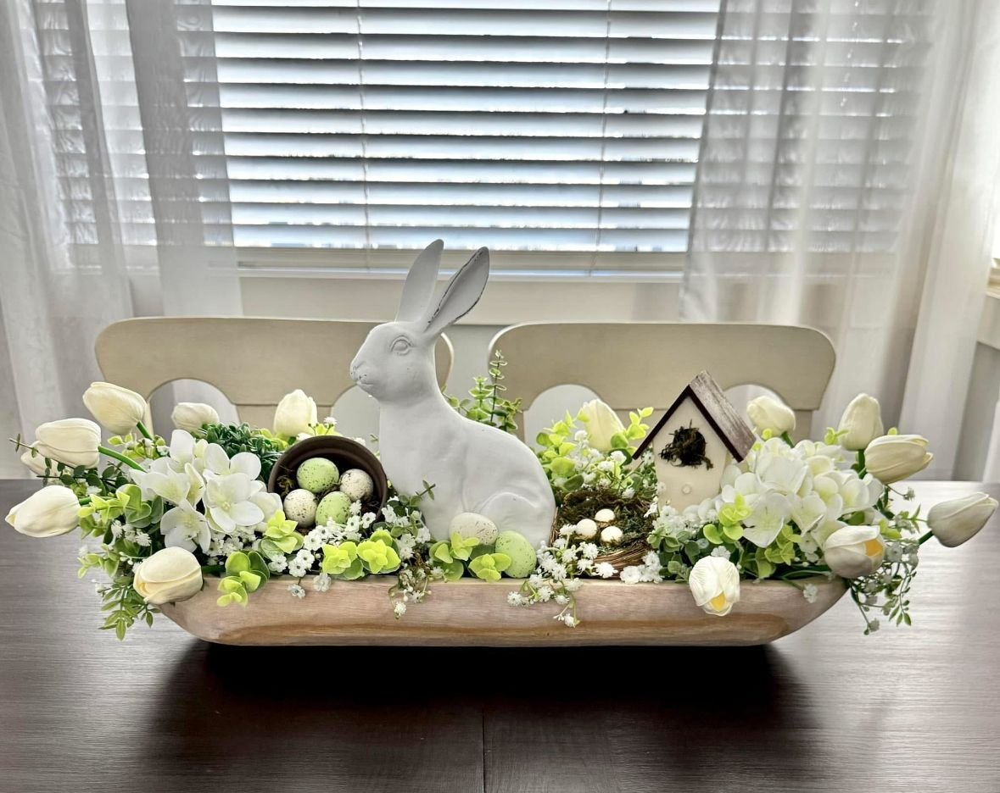
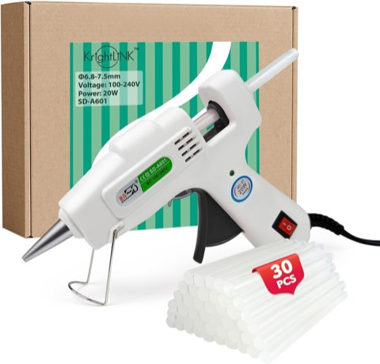
Krightlink Mini Hot Glue Gun Kit with 30 Glue Sticks, 20W Fast Preheating
Shop on AmazonA Few Things Worth Remembering
Sticking to two or three colors, leaning on natural textures, and leaving a little breathing room between elements keeps every one of these from tipping into clutter. Neon colors, too many competing patterns, and overcrowding are the three things that reliably ruin an otherwise good craft. When something looks slightly off, removing one item almost always fixes it faster than adding another.
15 Spring Craft Ideas
1. Simple Spring Centerpiece Tray
This one ties the whole list together, a tray holding a small vase, a candle or two, a mini jar, and one natural element like moss or stones.
It looks fully styled and intentional without ever feeling like a permanent commitment to a single look.
Grouping the pieces in odd numbers keeps the balance right, and the whole thing can be swapped out in minutes whenever the table starts to feel stale.
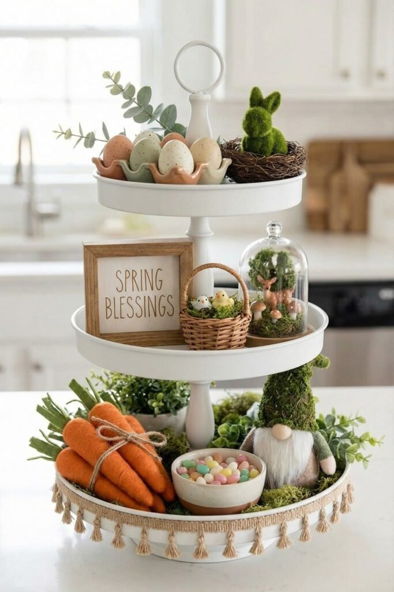
2. DIY Nature Shadow Box Art
Leaves, small flowers, or thin branches collected on a walk turn into real art once they're arranged inside a shadow box frame.
A neutral background, a loose arrangement, and a gentle hand with the glue are all it takes to bring the outdoors inside.
It costs essentially nothing and finally gives a reason for every stray leaf or flower picked up and pocketed along the way.
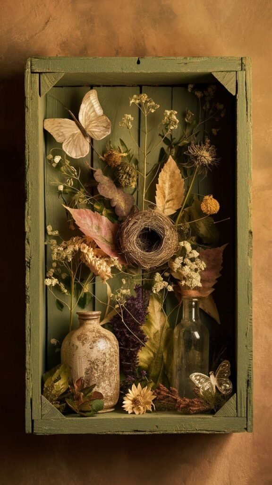
3. Spring Painted Eggs, Beyond the Holiday Aisle
Painted eggs don't have to look like they came straight from the holiday aisle. In neutral tones, they read as genuinely sculptural.
Wooden or ceramic eggs in matte paint, soft earthy colors, and simple solid tones or patterns keep the whole thing feeling like real decor.
Displayed in a wooden bowl with a little moss, they're consistently mistaken for an actual art piece rather than ten minutes of craft paint.
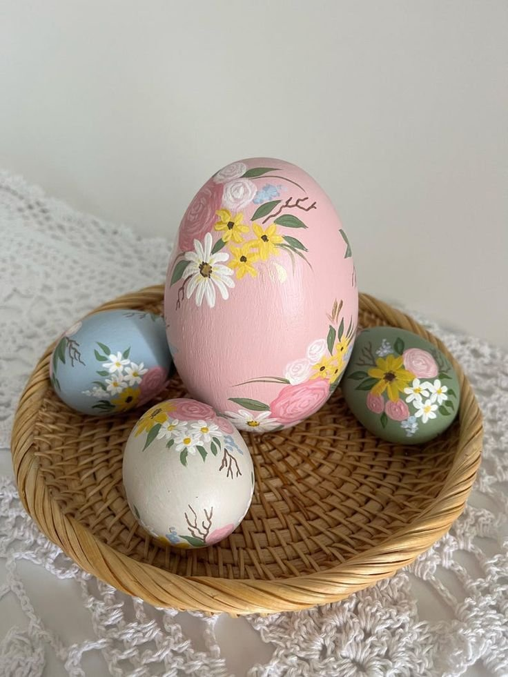
4. DIY Floral Hoop Wall Decor
An embroidery hoop wrapped in greenery with a small floral cluster attached off to one side reads as modern and intentionally asymmetrical.
Hanging two or three of these at slightly different heights fills empty wall space fast, without the visual weight of a traditional frame.
It looks almost too simple while it's being made, and then reliably earns more compliments than something far more complicated would.
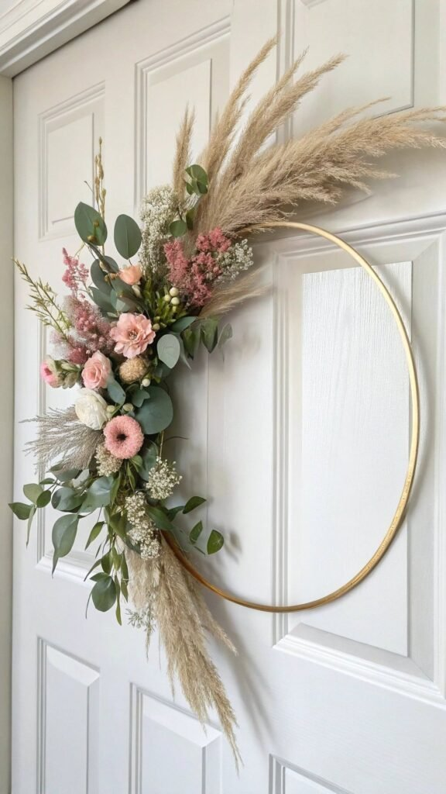
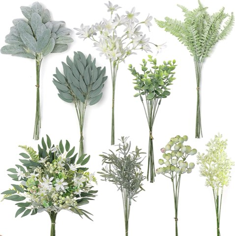
70 Piece Artificial Greenery Stem Box Set, Sage Green and White, 8 Kinds
Shop on Amazon5. Painted Terracotta Birdhouses
Small wooden or terracotta birdhouses, painted in a soft pastel palette and set on a shelf or windowsill, bring a bit of backyard charm indoors.
Soft blue, sage green, cream, and blush all work well together, the goal is cottagecore, not a kindergarten art table.
Keeping the palette to two or three colors is what keeps a set of these looking styled instead of like a toy display.
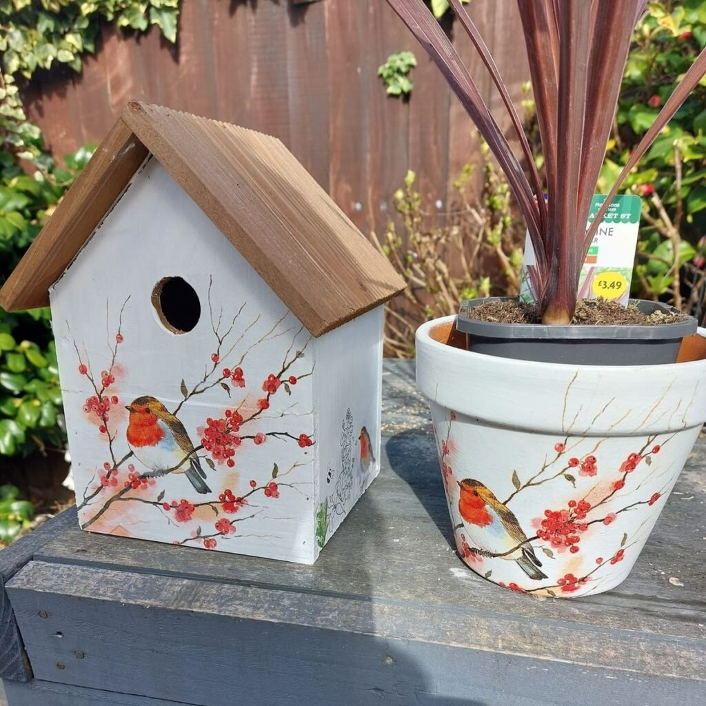
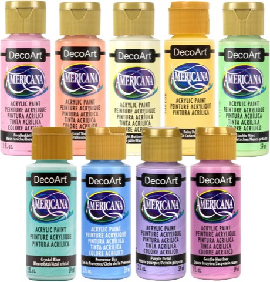
DecoArt Americana Essential Pastel Acrylic Paint Set, 9 Bottles, 2 fl oz
Shop on Amazon6. DIY Spring Candle Holders With Dried Flowers
A plain glass votive turns into something considerably more special once tiny dried flowers or pressed leaves are sealed onto the outside.
The candlelight shines through the dried petals and casts a soft glow that a plain glass holder never manages on its own.
It costs almost nothing to make, yet consistently gets mistaken for something bought from a boutique.
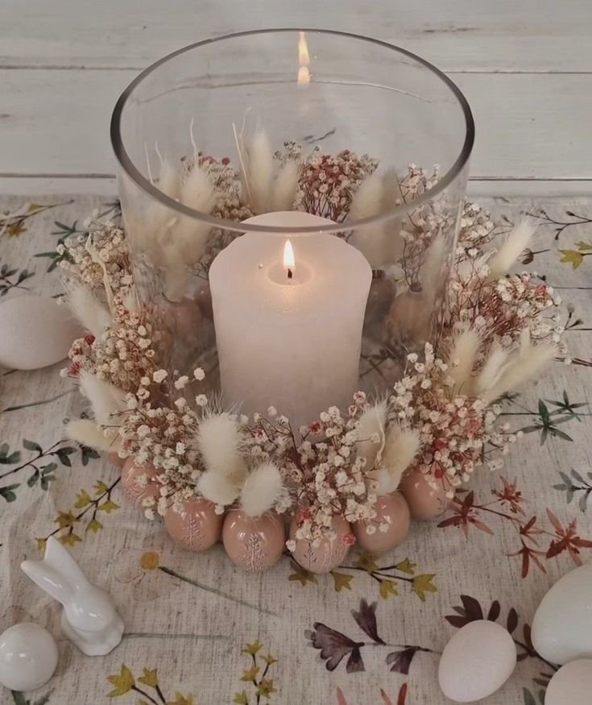
7. Fabric Scrap Spring Table Runner
Leftover fabric scraps or an old cotton shirt, stitched together into a simple patchwork strip, makes a table runner with real character.
Soft spring colors, sage, blush, cream, stitched or glued together and pressed flat give it texture a store-bought runner never quite has.
A slightly imperfect seam actually works in its favor here. It reads as handmade rather than mass-produced, which is exactly the point.
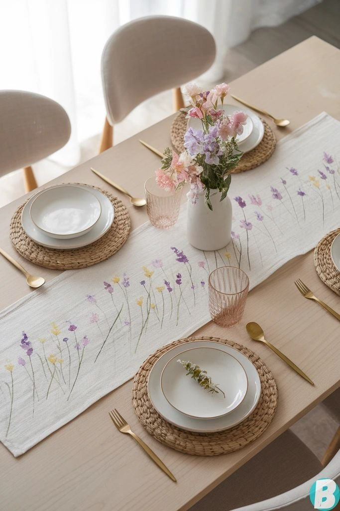
8. Bunny or Bird Silhouette Wall Art
This one sounds like it risks feeling kiddish, but kept minimal it reads as genuinely modern instead.
Simple silhouettes cut from black or white cardstock, framed in a thin neutral frame, keep the shapes looking intentional rather than cartoonish.
Neutral colors and clean outlines are what separate this from a kindergarten craft project, the simpler the shape, the more sophisticated the result.
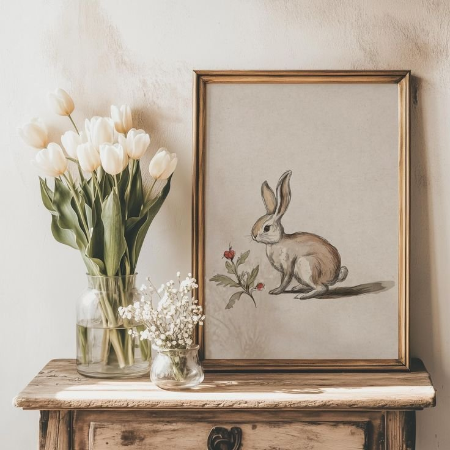
GOmaize Front Loading Black Picture Frames, 8 x 10 Inch, Set of 5
Shop on Amazon9. Pressed Flower Bookmarks
This craft feels soft and a little nostalgic, small flowers pressed inside a book for a few days, then laminated onto a strip of cardstock.
The result makes a genuinely thoughtful handmade gift, and it finally puts to use all those flowers picked up on a whim and never used for anything.
They're lightweight, personal, and noticeably more memorable than anything bought off a shelf.
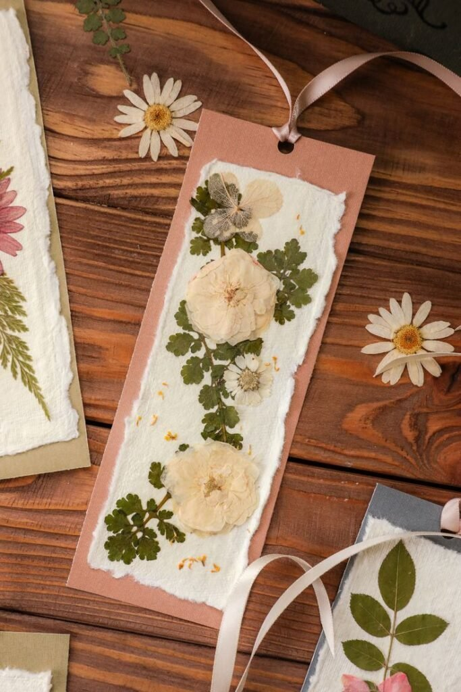
10. DIY Paper Flower Garland
This one is cheerful without much effort, simple flower shapes cut from colored cardstock and strung together along a length of twine.
Hung across a window or along a shelf, it adds color without adding any real weight or clutter to the room.
It's genuinely lightweight, budget-friendly, and renter-safe, which makes it an easy call for anyone who can't commit to anything permanent.
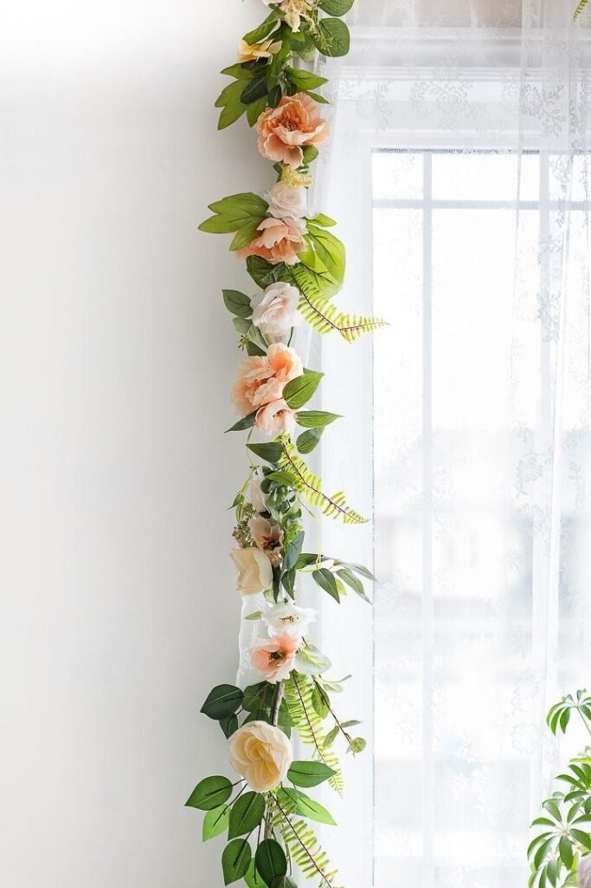
11. Hand-Painted Wooden Signs With Spring Quotes
A quote sign only works when the font stays simple and the message stays short, "Hello Spring" does more than a full paragraph ever could.
A neutral paint color, one consistent font style, and real restraint on the amount of text are what keep it from looking cheap.
Overcrowded text tips the whole thing into looking like a dated motivational poster instead of considered decor.
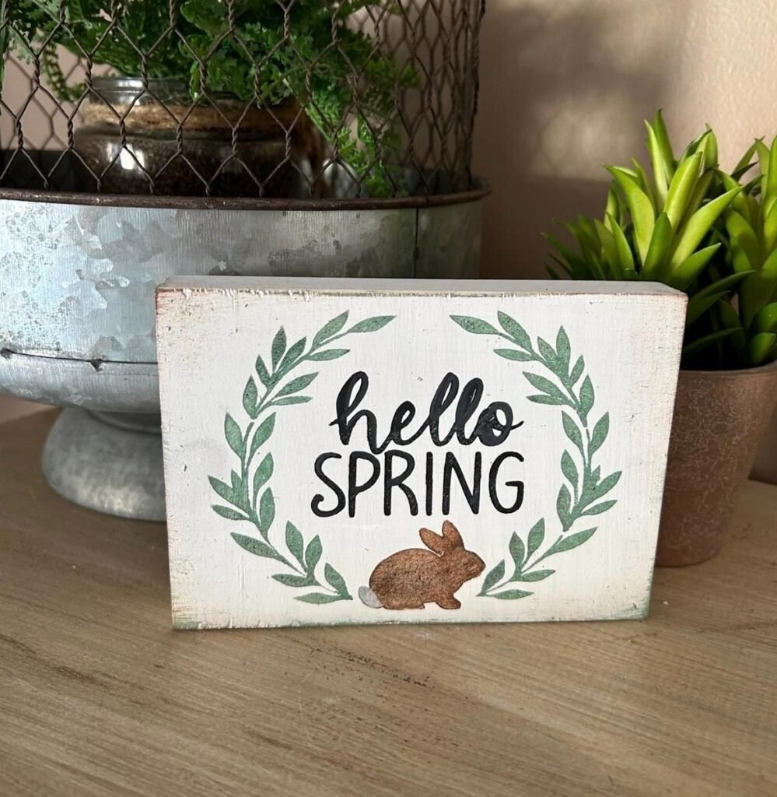
12. Decoupage Flower Pots
This one looks artsy but stays genuinely simple, patterned napkins or scrapbook paper glued onto a plain terracotta pot, then sealed.
Cut the paper to fit, brush on a decoupage medium, smooth it down, and seal with a second coat once it's dry.
It instantly hides a boring orange clay pot and makes a basic planter look custom, which makes it a strong fit for herbs or small succulents.
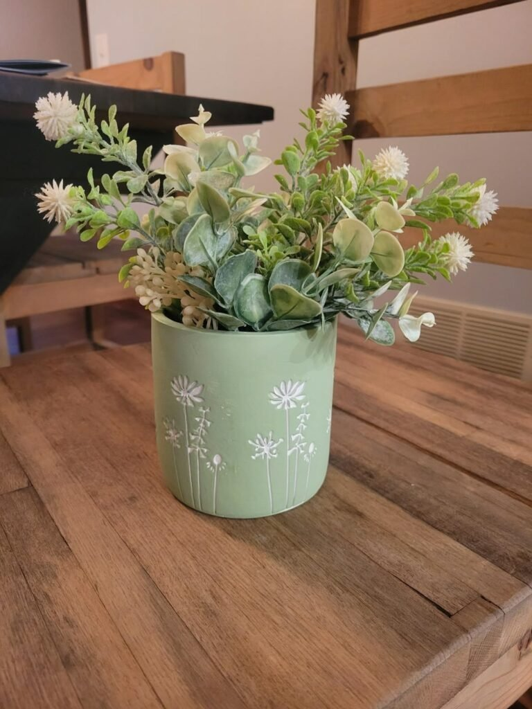
13. Twine-Wrapped Glass Bottles
This one leans rustic and cozy, and it costs almost nothing to put together.
Wrapping old bottles or jars in twine from the base upward, then adding a few small stems at the top, is the entire technique.
The texture reads beautifully against a wood table, and it's convincing enough that people tend to ask where it was bought rather than assume it was made.
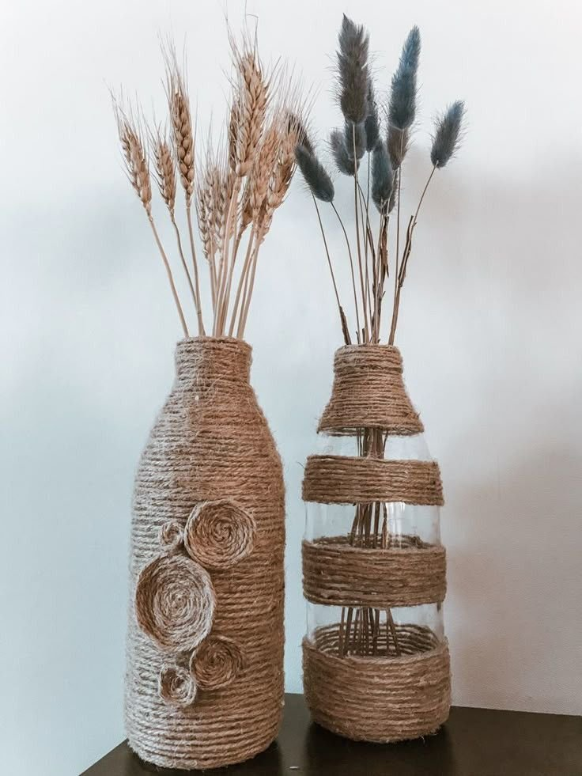
14. Painted Mason Jar Flower Vases
This is the easiest possible entry point into spring crafting, and it never stops being satisfying.
Old mason jars, a coat of pastel chalk or acrylic paint, and a light sanding on the edges for a rustic finish is the whole process.
A little imperfection in the paint actually helps here, a slightly messy finish reads as more intentional than a flawless one.
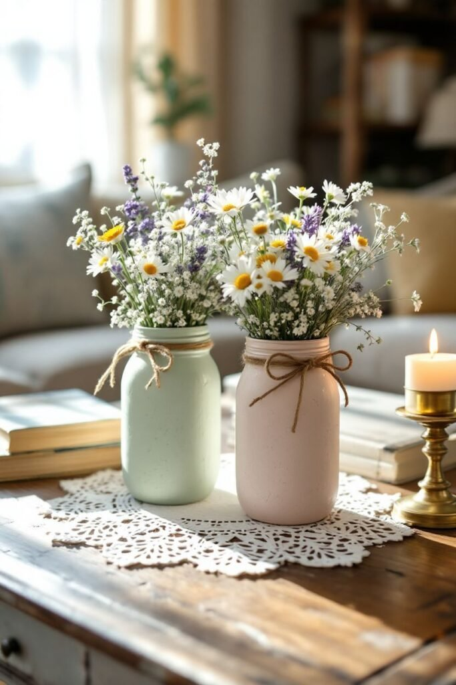
15. Spring Wreath With Faux Greenery
If only one thing gets made this season, make it a wreath. Nothing announces spring from the front door quite as loudly.
A basic hoop, hot-glued faux eucalyptus, a handful of small flowers, and a soft bow is genuinely all it takes.
Less reads as modern here; more starts to look like a craft store exploded. Three to five accent flowers is usually the ceiling, not the starting point.
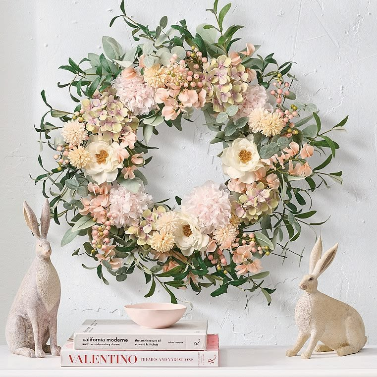
2 Pack Artificial Hanging Eucalyptus Garland Vines, Faux Greenery
Shop on AmazonMatching the Craft to the Time Available
Picking a project based on mood and time available is what actually gets it finished. Ten minutes covers small jars or simple decor. Thirty minutes is enough for a wreath or a paper craft. A full hour opens up painting projects or anything bigger. Matching the craft to the energy on hand beats saving forty ideas and finishing none of them.
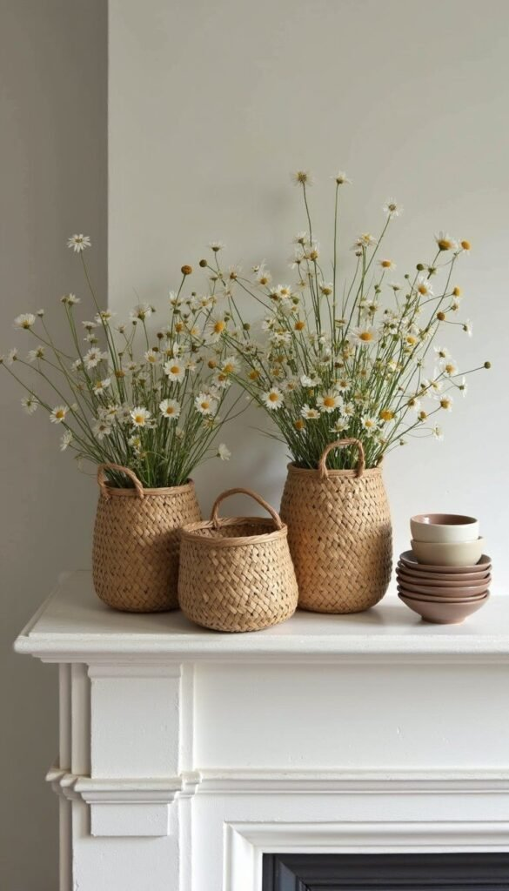
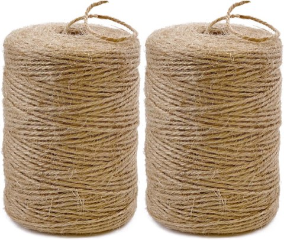
2 Pack 2mm Natural Jute Twine, 1600 Feet, for Crafting and Gift Wrapping
Shop on AmazonFinal Thoughts
Fifteen craft ideas, no complicated tools, and a full afternoon of easy wins waiting to happen. None of it requires perfection or a fully stocked craft room, just a little time and a small spark of motivation.
Start with one jar, one wreath, one bottle. The mood shift that follows tends to be bigger than the project itself.